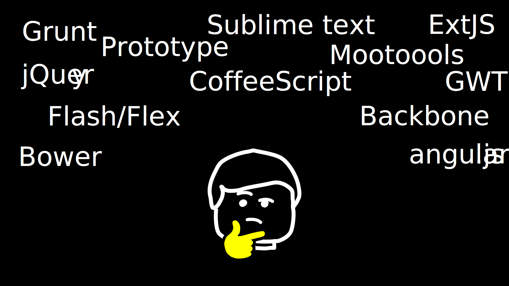
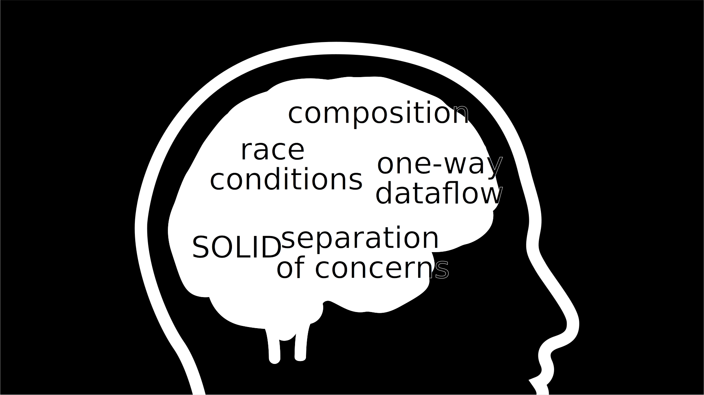
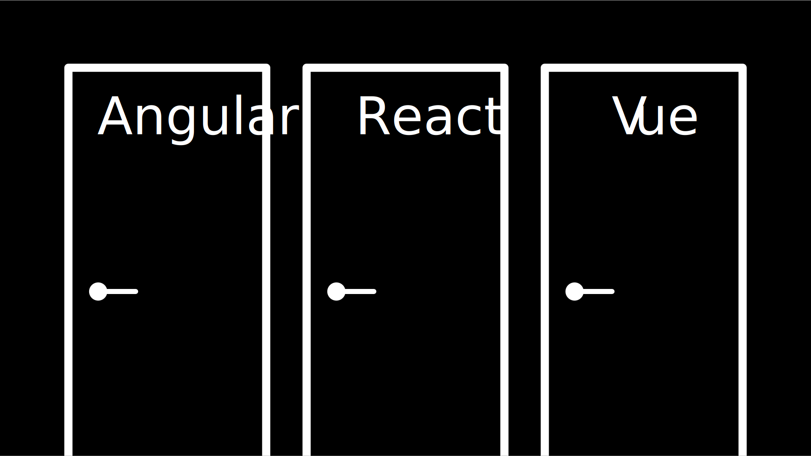
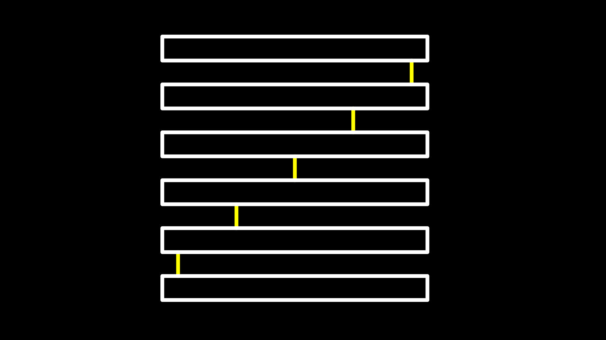
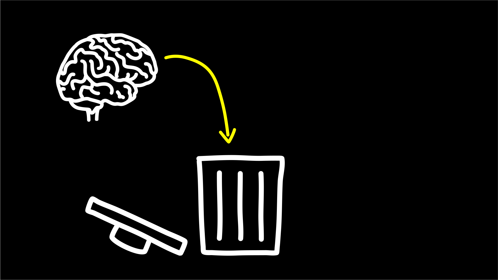
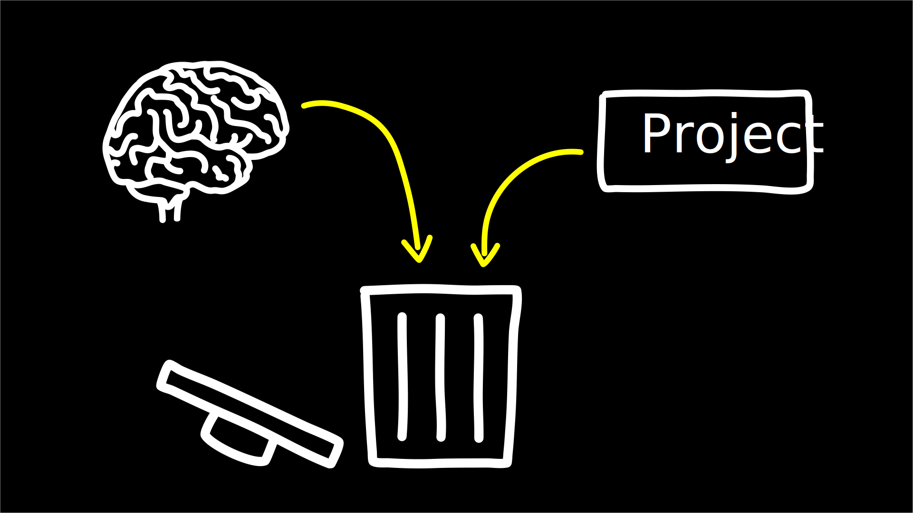
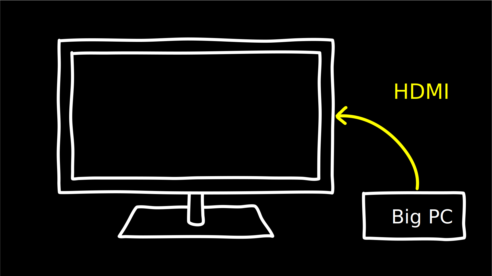
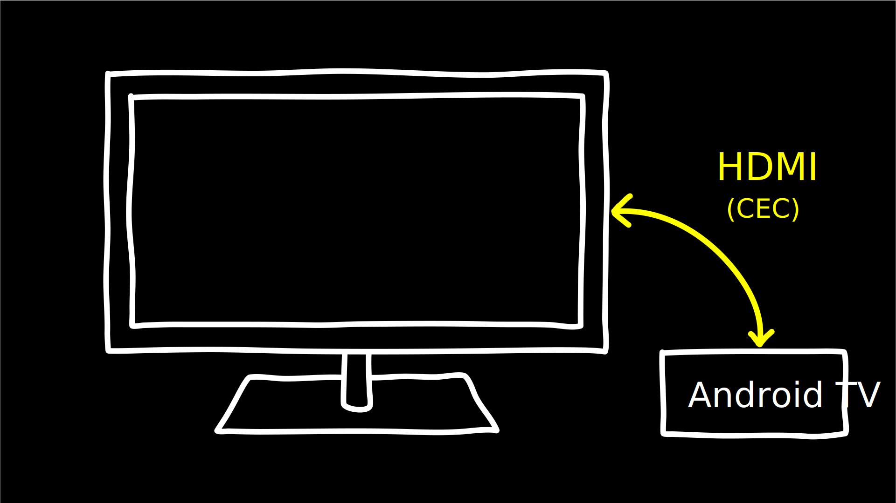

Mettre la musique (Gymnopedie) Voix off, grave, triste Perdu dans la jungle du Web moderne, de ses frameworks et ses standards, notre personnage principal est perdu.
Depuis le début de sa carrière, au fil des semaines, des mois et des années… il voit naitre tous ces nouveaux outils révolutionnaires et prometteurs mais qui demain seront délaissés et remplacés par de nouveaux encore plus mieux.

C’est avec tristesse et mélancholie qu’il repense à tous ces frameworks, librairies, éditeurs de code et autres outils en ligne de commande…
Un peu de respect pour les disparus SVP!
…qui s’ils n’ont pas déjà disparu de nos projets ont déjà disparu de nos radars de coolitude. Cette situation l’inquiète, le questionne et l’empêche de dormir. Dans le cadre de son travail, il doit faire des choix techniques mais il ne sais plus quoi faire. C’est à ce moment là que notre personnage pris la décision d’aller voir un thérapeuthe.
😎 Bonjour docteur. 👩⚕️ Bonjour Monsieur Sablonnière, alors, qu’est-ce qui vous amène ? 👩⚕️ La dernière fois que je vous ai vu, c’était il y a bien 10 ans… 👩⚕️ Vous commenciez votre premier job et vous étiez en pleine crise existentielle sur "est-ce qu’il faut utiliser des espaces ou des tabulations" et sur la "prononciation des guiffes animé"… 😎 Des jifs, vous voulez-dire ? 😎 Non mais ça c’est du passé, j’étais jeune et débutant, je ne me posais pas les bonnes questions.
2 espaces, c’est mieux !
😎 Aujourd’hui, je prends du recul sur le monde du frontend Web et je fais un constat : 😎 Les effets de mode et de hype nous rendent beaucoup trop dépendant de nos outils. 👩⚕️ Humm, dites mois en plus, je vois pas trop quel problèmes ça implique.
😎 Problème numéro 1… 👩⚕️ Euh… quand on vous pose une question, vous répondez toujours en sortant un PowerPoint ?
C’est même pas PowerPoint en plus…
😎 Bah ouais pourquoi, je vois pas le problème. Bref.
Problème n°1
Trouver la solution avant de constater le problème
😎 Problème numéro 1… 😎 Quand on choisi un framework (ou une lib) frontend 😎 on en oublie souvent le problème qu’on voulait résoudre à la base et pourtant on a l’impression d’avoir trouvé la bonne réponse, la solution à utiliser. 😎 Parfois, c’était le bon outil et parfois la solution est adaptée à des problèmes qu’on a pas vraiment. 👩⚕️ Mais pourquoi vous faites ça ?
😎 Parfois le choix se fait parceque la techno est cool (DX vs UX)
😎 Parfois parcequ’elle est utilisée/créée par un géant du Web
😎 Les recruteurs demandent tous cet outil, du coup, on se forme dessus, c’est un cercle qui s’auto alimente 😎 job hunting 😎 Il y a des confs sur le sujet et des meetups, ça doit forcément être bien
Comme ma voiture !
Problème n°2
S’enfermer dans son propre écosystème
😎 Problème numéro 2…
😎 On fois qu’on a choisi un ecosystème (fwk/lib), on a tendance à s’enferme dedans
😎 On cherche systématiquement comment faire X ou Y avec l’écosystème foo alors que X ou Y sont universels (jQuery) 😎 On code l’énième version de feature/composant X ou Y pour cet écosystème
😎 Difficile de revenir en arrière quand on a investi du temps d’apprentissage 😎 On rempli nos cerveaux avec des noms de features (au lieu de les remplir avec des noms de pattern)

😎 On ne voit plus les défauts de nos propres outils 😎 On soutient des fonctionnalités sans les comprendre

😎 On ne regarde pas ce qui se fait ailleurs avec un oeil ouvert (silo)
Comme une keynote d’Apple !
Problème n°3
Écrire du code fortement couplé qui subit mal des effets du temps
😎 Problème numéro 3… 😎 On produit du code qui subit mal les effets du temps
slide qui mélange les couches

slide couches non mélangées
😎 Les changements de son propre ecosystème 😎 Du code trop couplé au framework lui même 😎 L’arrivée de nouveaux standards 😎 Du code qui mélange les couches (souvent car on ne voit pas en quoi c’est un problème) 😎 Voire même sa disparition

😎 On jette à la poubelle plein de connaissances

😎 On jette à la poubelle plein de code
WTF?
Comme ma télé !


Allez, hop ! Thérapie de groupe !
J’y vais, mais j’ai peur !
Hubert Sablonnière
@hsablonniere
Clever Cloud
17 avril 2019
DevoxxFR
leWeb,sesFrameworkset sesStandards
déconstruire pour mieux (re?)construire...
C’était quoi le problème ?
titre besoins utilisateur et besoins développeur
titre besoins utilisateur et besoins développeur
+ list des besoins (un par un)
listes besoins utilisateurs * accessible * responsive * 1er chargement rapide * navigations rapides * fluidité, pas trop de lag * pas trop de conso batterie * pas trop de conso CPU listes besoins développeur * gagner du temps (démarrer mon projet rapidement) * avoir des conventions * écrire le moins de code possible * écrire du code propre et lisible * ne pas trop réfléchir (modèle de pensée simple, abstractions) * isolation des impacts * écrire du code réutilisable (composants) * ne pas réinventer la roue * courbe d’apprentissage * ne pas dépendre des mes outils * pouvoir travailler avec un designer
Comment en est-on arrivé là ?
Pour comprendre où on va, il faut savoir d’où on vient.
schéma ères du web (vide)
bon anniversaire le web
schéma ères du web (old school ssr)
schéma ères du web (images)
schéma ères du web (forms)
schéma ères du web (SSR + JS)
schéma ères du web (AJAX with jQuery)
schéma ères du web (SPA era, client side templating)
schéma ères du web (SPA era, routing)
schéma ères du web (the mega bundle era with empty body)
schéma ères du web (SSR + hydratation + code splitting)
Ce que les frameworks nous apportent ?
remettre les 3 portes aves les 3 frameworks
afficher le plan vu de dessus 3 couloirs isolés
vision horizontal avec des solutions à des problèmes
etagères
Component system (API + runtime)
DX isolation impacts
DX réutilisabilité code
DX ne pas dépendre de mes outils, exit strat
Component authoring (DX)
DX gagner du temps
DX moins de code possible
DX modèle de pensée simple
DX ne pas réinventer la roue
DX faciliter le boulot du designer
UX chargement rapide (SSR, compilation de tmpl donc minif, tree shaking)
CSS authoring
DX isolation des impacts
UX chargement rapide (SSR, compilation de tmpl donc minif, tree shaking)
Manipulation du DOM
UX Fluidité, Pas trop de lag (async and scheduling microtask…)
SSR
déjà abordé pas mal de fois
Routing
UX chargerment rapide
UX fluidité
State management
DX modèle de pensée simple
DX écrire un code propre
en vrac car moins important pour notre discussion
CLI
Devtools
HTTP client
Form handling
Module system
Dep inj
i18n
tests
recap ?
Ce que les standards nous apportent ?
préambule exemple jquery ⇒ sizzle + ajax + API chainée sucre syntaxique
Web Components
schéma de la télé ⇒ analogie avec le Web component
Custom Elements
schéma de la télé ⇒ analogie avec le Web component
API (attr, prop, methods, events) + lifecycle methods
exemple de code de custom element
exemples de noeuds du DOM avec des attributs
exemples de noeuds du DOM avec des propriétés non string/boolean
exemples de noeuds du DOM avec des méthodes
exemples de noeuds du DOM avec des événements un peu custom
où ça se place dans notre tableau de solutions ?
Custom Elements
🤔 Pas de customized built-in elements dans Safari
😐 Pas de "data-binding" sur les propriétés (getter/setter ou proxy)
😡 Pas de HMR (sans bidouille)
📜 Scoped CustomElementRegistry
📜 Lazy definition
📜 Form associated elements
Shadow DOM
schéma de la télé ⇒ analogie avec le Web component
Ajouter à l’API les custom prop, les slots et les ::part
exemples de noeuds du DOM avec des ::part ou des custom prop
où ça se place dans notre tableau de solutions ?
Shadow DOM
😡 Pas de SSR (sans bidouille)
📜 Décorative shadow DOM, custom elements
📜 Custom pseudo class
📜 CSS modules
<template>
où ça se place dans notre tableau de solutions ?
<template>
😡 Pas d'interpolation ni de "data-binding"
📜 Template instanciation (limitée à de simples valeurs)